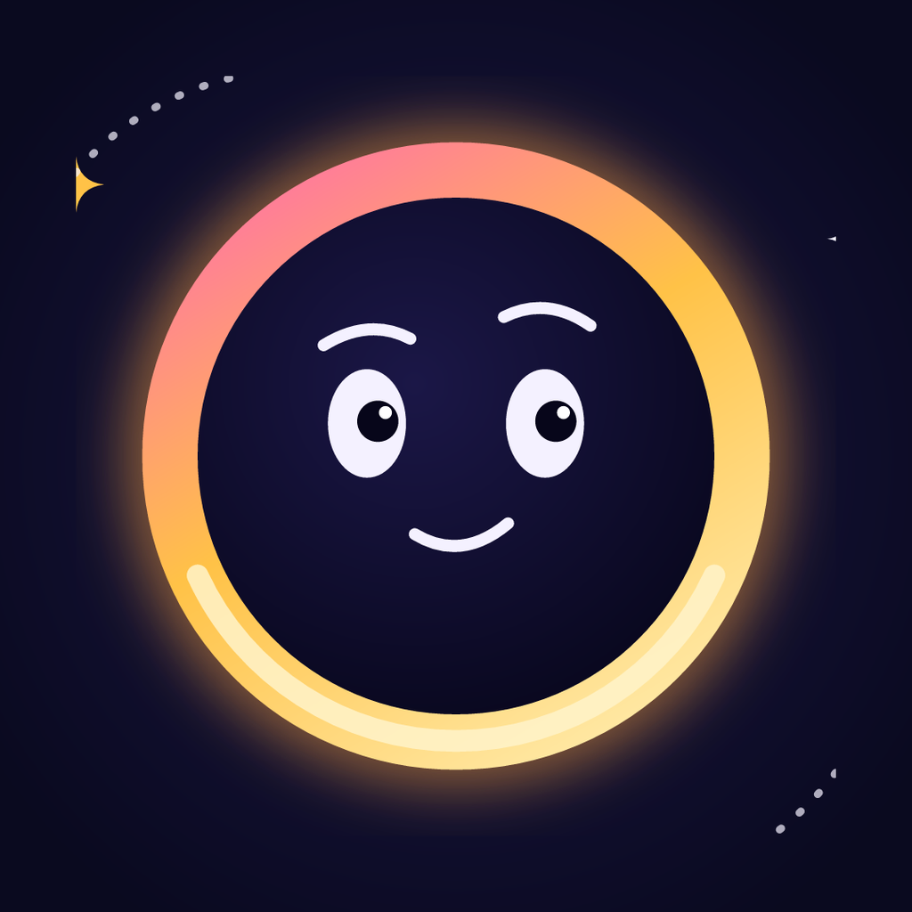

Hola, Vórtex
El espacio en 30 segundos · Space in 30 seconds
Hola, Vórtex is a Spanish-language channel that publishes short educational videos about space: anecdotes from the history of space exploration and astronomy news, told by Vórtex, a small and curious black hole.
About the app
The "Hola, Vórtex" app is an internal publishing tool. It is used only by the channel owner to publish the channel's own videos, with their captions, on the channel's own accounts on YouTube, Instagram and TikTok (@holavortex0), and to read the statistics of those accounts. It is not offered to the public and has no other users.
How the videos are made
Scripts are drafted with the help of AI, every figure and date is checked against primary sources such as NASA and ESA, and each video is reviewed and approved by a person before it is published. Videos are labelled as AI-generated content.